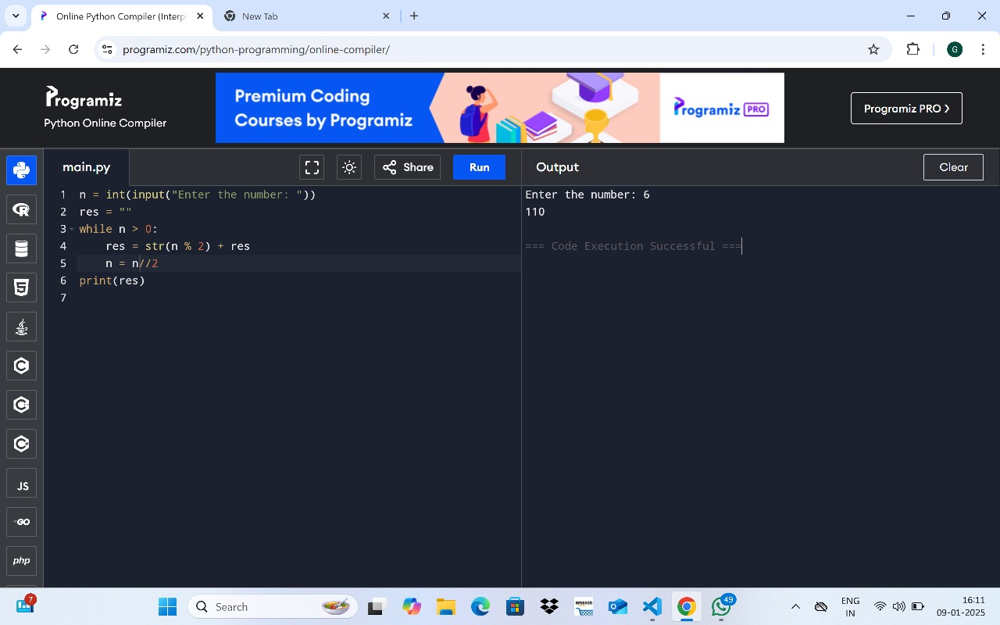

1) WAP to convert the decimal to binary. Input: Enter a number: 5 Output: 101
n = int(input("Enter the number: "))
res = ""
while n > 0:
res = str(n % 2) + res
n = n // 2
print(res)

2) WAP to print the sum of digits in the given number until a single digit is occured. Input: Enter number: 128 Output: 2
num=input("enter the number :")
sum=0
double=0
for i in num:
sum=sum+int(i)
res=str(sum)
for j in res:
double=double+int(j)
print(double)